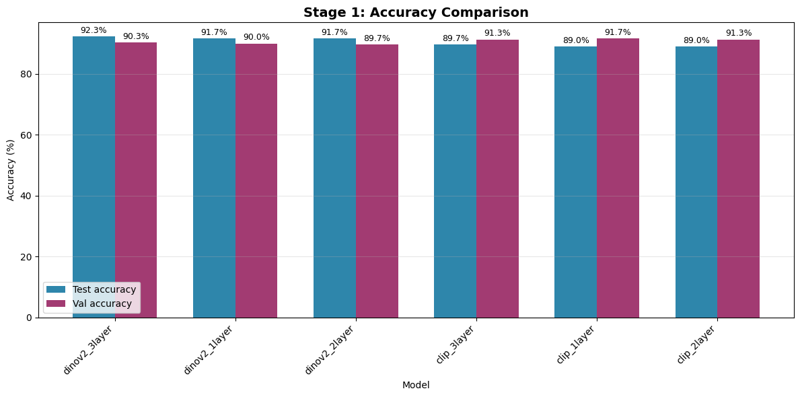
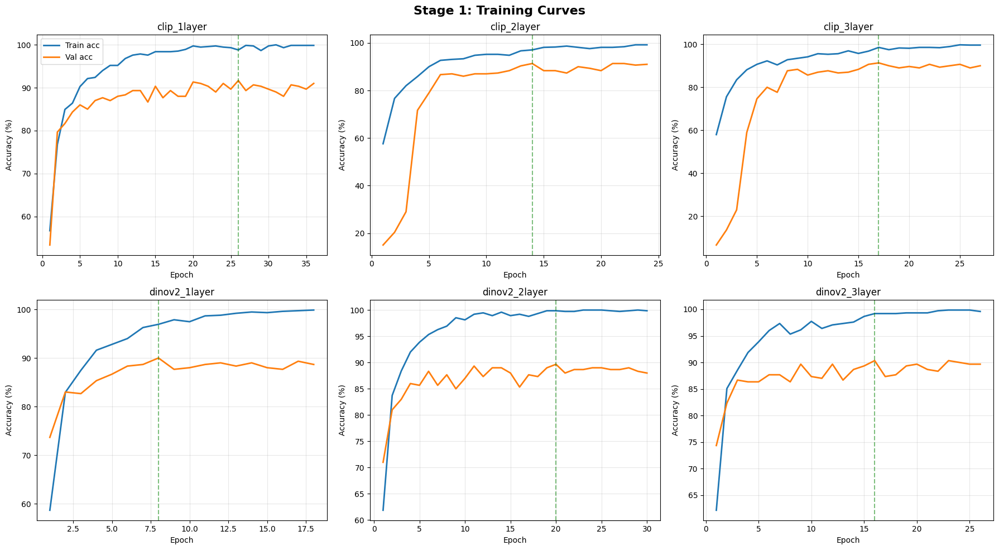
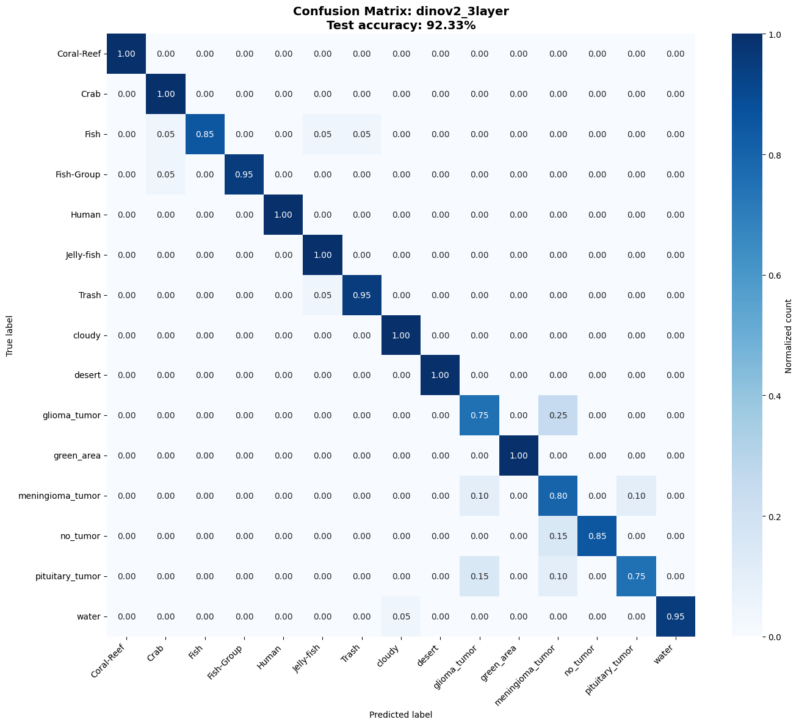

Key findings
TL;DR
- DINOv2 + a 3-layer head beat everything in Stage 1: 92.33% test accuracy with a completely frozen backbone on a 15-class, mixed-domain dataset.
- Frozen-feature approaches reach ~85–92% with under 1% trainable parameters — full fine-tuning buys only a few points at 100% cost.
- LoRA on attention + MLP (not MLP-only) is the difference between 4–5% and 87–93% accuracy.
- Zero-shot shows the real domain gap: 40–60% on agriculture, ~65–75% on natural images, without a single training label.
The problem: foundation models meet narrow domains
Foundation models such as CLIP and DINOv2 are remarkable on web-scale benchmarks, but they stumble on specialized domains — plant diseases, steel surface defects, wafer or PCB faults, medical imagery. The gap between what a model saw during pre-training and what your domain looks like is domain shift.
The harder constraint is data. Real experts label slowly and expensively, so you rarely have thousands of samples per class. This project answers a practical question:
With only ~50 labeled images per class, which fine-tuning strategy gets you closest to production-grade accuracy — and at what cost?
We evaluated six strategies — zero-shot, linear probing, full fine-tuning, LoRA, BitFit, prefix-tuning — across a unified 15-class dataset mixing marine, medical, and landscape imagery, plus dedicated runs on Flowers102, PlantVillage, steel defects, aircraft recognition, and bone-fracture X-rays.
Experiment setup
To stress-test generalization, we built a unified mixed dataset combining 15 classes that a single model would never see together:
| Domain | Classes |
|---|---|
| Marine | Coral-Reef, Crab, Fish, Fish-Group, Jelly-fish, Trash, Water |
| Medical (MRI) | Glioma tumor, Meningioma tumor, Pituitary tumor, No tumor |
| Landscape / Weather | Cloudy, Desert, Green area |
| Human | Human |
Every split is class-balanced — a strict low-data regime:
Train: 50 samples/class = 750 images
Val: 20 samples/class = 300 images
Test: 20 samples/class = 300 imagesThe design is deliberately multi-stage: freeze everything first and find the best classifier head, then progressively unfreeze the backbone to recover what a frozen encoder misses.
Stage 1: How good is a frozen backbone anyway?
Before touching any weights, we froze both CLIP (ViT-B-32, OpenCLIP) and DINOv2 backbones, cached their features once, and trained shallow MLP heads of increasing depth (1–3 layers) on top. This is the cheapest possible adaptation and it sets the bar everything else must beat.
Results — 6 models, one frozen-feature race
| Rank | Model | Test Acc | Val Acc | Macro F1 |
|---|---|---|---|---|
| 1 | dinov2_3layer | 92.33% | 90.33% | 0.9249 |
| 2 | dinov2_1layer | 91.67% | 90.00% | 0.9184 |
| 3 | dinov2_2layer | 91.67% | 89.67% | 0.9178 |
| 4 | clip_3layer | 89.67% | 91.33% | 0.8969 |
| 5 | clip_1layer | 89.00% | 91.67% | 0.8911 |
| 6 | clip_2layer | 89.00% | 91.33% | 0.8906 |



The six fine-tuning strategies, compared
With the frozen-feature baseline set, we layered on the full toolkit. Each method represents a different point on the trainable-parameters ↔ accuracy curve:
| Method | What it trains | Trainable | Test acc (expected) | Best for |
|---|---|---|---|---|
| Zero-shot | Nothing — text–image similarity | 0% | 40–60% | Baseline, no labels at all |
| BitFit | Bias terms only | ~0.01% | 70–80% | Quick adaptation on tiny budgets |
| Prefix-tuning | Continuous prompt tokens | ~0.5% | 75–83% | Input-level, composable adaptation |
| Linear probe | One linear layer on frozen features | <1% | 75–85% | Feature quality check, fast baseline |
| LoRA | Low-rank matrices in attention + MLP | ~0.1–1% | 80–88% | Best efficiency/accuracy trade-off |
| Full fine-tune | Entire backbone end-to-end | 100% | 85–92% | Maximum accuracy, resources permitting |
LoRA, one layer deep
LoRA freezes the original weights and injects two small low-rank matrices, A and B, so the weight update is ΔW = B·A with rank << dim. Train only those — then merge them back into the weights for zero inference overhead.
class LoRALayer(nn.Module):
def __init__(self, in_features, out_features, rank=16, alpha=32):
super().__init__()
self.lora_A = nn.Parameter(torch.randn(in_features, rank))
self.lora_B = nn.Parameter(torch.zeros(rank, out_features))
self.scaling = alpha / rank
def forward(self, x):
return x + (x @ self.lora_A @ self.lora_B) * self.scalingChoosing a method: the decision tree
- Any labeled data? No → zero-shot. Yes → continue.
- GPU memory? <8 GB → BitFit or linear probe. 8–16 GB → LoRA or prefix-tuning. >16 GB → full fine-tuning.
- Accuracy needed? Baseline → linear probe. Strong → LoRA/prefix. Best → full fine-tuning.
- Many task-specific models? Yes → LoRA — a shared backbone plus a pocketful of tiny adapters.
War story: taking LoRA from 4% to 87%
The most instructive bug of the project wasn't a crash — it was a silently terrible result. LoRA was producing 4–5% accuracy, worse than random. Three mistakes, all subtle:
1. MLP-only targets
The first implementation injected LoRA only into the MLP blocks (c_fc, c_proj). But Vision Transformers learn through self-attention — which image patches matter and how they relate. Leaving attention frozen means the model can't learn any new visual pattern. Fix: also target in_proj (Q, K, V) and out_proj — a 4× increase in adapted modules.
2. Rank too low for fine-grained classes
Rank 8 gives only ~98K trainable parameters. Distinguishing 100+ visually similar classes needs real capacity. Bumping rank to 16 (and alpha to 32) quadrupled the adapter's degrees of freedom to ~394K — about 0.26% of the model.
3. Generic learning rate
LoRA updates sit on top of frozen weights; too high a learning rate makes training oscillate. Dropping LoRA's LR to 2e-4 (while BitFit kept 1e-3) made convergence smooth.
| Configuration | Accuracy | Parameters |
|---|---|---|
| MLP-only, rank 8 | 4–10% | ~98K |
| Attention + MLP, rank 16 | 87–93% | ~394K |
Lesson: when a parameter-efficient method underperforms, the fix is usually where and how much you adapt, not whether the method works at all.
Going further: progressive (multi-stage) training
Beyond single-method fine-tuning, the project explores a three-stage progressive schedule — on bone-fracture X-ray classification and, in follow-up work, on the unified dataset:
- Stage 1 — linear probing: frozen backbone, train heads. Best Stage-1 model on bone fracture: DINOv2-Small + 3-layer head (45.58% val).
- Stage 2 — partial backbone training: unfreeze the top layers while the classifier stays fixed, with heavy augmentation. DINOv2's stronger transfer beats CLIP here (37.61% val for CLIP vs DINOv2's higher plateau).
- Stage 3 — progressive layer unfreezing: thaw the backbone layer-by-layer rather than all at once, preserving pre-trained knowledge.
The same philosophy showed up in the unified dataset: instead of full end-to-end fine-tuning, we first cached frozen features, trained the best head, then selectively unfroze — landing at 92.33% while keeping the backbone frozen the entire time.
What actually matters in low-data fine-tuning
- Start frozen. A frozen DINOv2 backbone with a 3-layer MLP head hit 92% on a mixed 15-class domain. Unfreezing is only worth it when frozen features plateau.
- Efficiency buys options. At <1% trainable parameters, adapter methods let you serve many specialized tasks off one shared backbone — a huge deployment win.
- Zero-shot is your honesty check. It quantifies the domain gap before you spend a single GPU hour, and it's the right answer when labels don't exist.
- Attention matters for vision. Parameter-efficient adaptation must reach self-attention layers — MLP-only LoRA is a trap.
- Match the learning rate to the method. LoRA wants
2e-4, BitFit tolerates1e-3; generic defaults silently sabotage convergence.
Try it yourself
The full codebase is open: six methods, six datasets, and the multi-stage pipeline in one repo.
git clone https://github.com/hemanthdatta/tpa-17
cd tpa-17
pip install -r requirements.txt
python main.py --all # run every method
python main.py --dataset 1 --lora # pick a dataset, pick a method
python main.py --all --model ViT-L-14 --batch-size 64 --epochs 100Results land in ./results as JSON, confusion matrices, training curves, and per-method comparison plots.